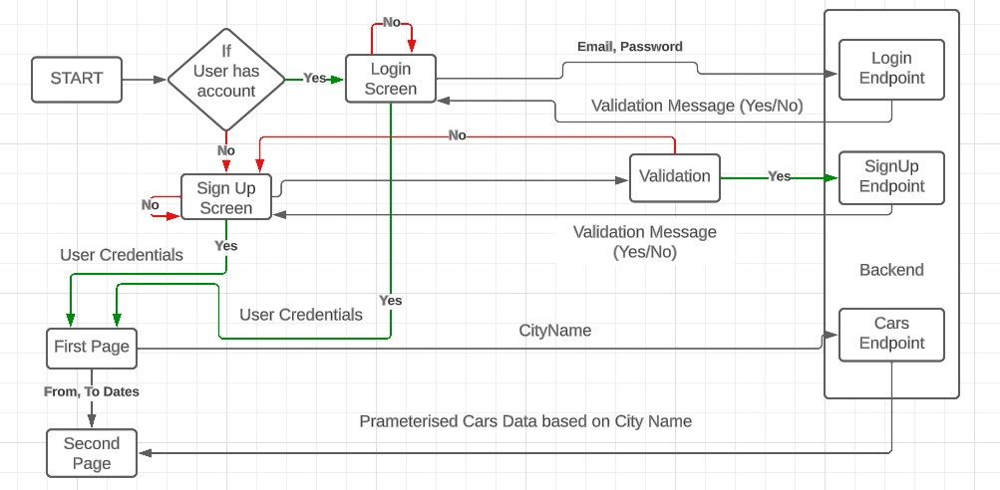

Zoom-car Rental
Zoom-car rental is a e-commerce website that allows you to rent a car, out of vast database of the website.
Projection Description
Zoom-car webiste Is an e-commerce website that allows Its user to rent a car. The website has huge repository of cars and It provides Its user with UI to rent any of car, by providing some personal Information like name, country, city , 'from' to 'to' date,etc.
The website will find parameterized number of cars of different size, fuel type and price range, user can get all the available cars available according to their location. There isn't any process for car renting, instead of that car user will book will not be available for the time period user has selected it. All the cars user rents , Its details like car names, date range and image are visible in history under sidebar.
User can logout anytime using logout button under sidebar.
The purpose of this app is to showcase my skills in web development. During my time at Infosys, I honed my skills in identifying and fixing code and UI issues before clients encounter them. To demonstrate my debugging skills, I chose to clone a well-established website and address any problems I found in my solution.

Fig. 1.0 backend-flowchart
Backend Components:
The backend of my MERN app consists of five endpoints, each serving a different purpose. These endpoints incorporate validation measures to ensure basic web security, checking the provided data for the preferred type and appropriate syntax using regular expressions (regex).
Car Endpoint:
Purpose:
Saves car information to the database.
Workflow:
The endpoint fetches the car image link from Google Drive, dynamically creates a URL to access the image, and saves the car data into the "cars" collection in the database.
Validation:
The endpoint validates the input data, ensuring it follows the required syntax and data types.
Cities Endpoint:
Purpose:
Updates the "cities" collection in the database.
Workflow: Each document in the "cities" collection consists of a variable named "countryName" containing country names and a variable named "cityName" containing a set of cities. The endpoint validates the input and adds new cities to the respective country's set.
Validation:
The endpoint ensures that there are no duplicate city names and performs appropriate validation for the input data.
Country Endpoint:
Purpose:
Updates the "countries" collection in the database.
Workflow: The "countries" collection contains a single file with a set named "countryName" that stores all the country names where the service is available. The endpoint validates the input and adds new countries to the set.
Validation:
The endpoint validates the input data, ensuring it follows the required syntax and data types.
Signup Endpoint:
Purpose:
Allows users to sign up and update user data in the "userData" collection.
Workflow:
The endpoint validates the input data and encrypts the password before saving it to the database to enhance security in case of a potential breach.
Validation:
TThe endpoint validates the input data, ensuring it follows the required syntax and data types.
Login Endpoint:
Purpose:
Validates user credentials and provides access to user data.
Workflow:
The endpoint validates the provided credentials, retrieves the encrypted password from the "userData" collection, decrypts it, and cross-checks it to verify the correctness of the login. If successful, the user's data is fetched and returned as the output.
Validation:
The endpoint validates the input data, ensuring it follows the required syntax and data types.

Fig. 2.0 frontend-flowchart
Frontend Components:
Information Box:
This component is in the first page bottom section and displays the city provided during sign-in. The selected city is indicated in the first input field.
Date Selection:
The second input field displays the selected date range in the format "yy-mm-dd to yy-mm-dd". Clicking on the input field opens two calendars in the middle of the screen. The first calendar allows you to choose the "from" date, while the second calendar is for selecting the "to" date.
Get Car Button:
Clicking this button scrolls you down to the car listing section. The available cars are fetched from the database based on the city and date range you selected.
Services Display:
This section showcases various services provided.
Reviews:
Users can view and read reviews about the services.
Company Policies:
This section provides information about the company's terms and conditions.
Support:
Users can access support-related information here.
Country and City Selection:
This section fetches a list of countries and their respective cities where services are available. The endpoint for fetching cities is defined in the requests.js file located at src/Components/requests.js.